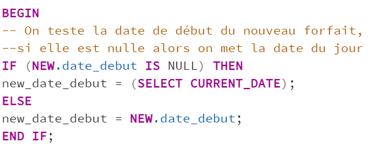
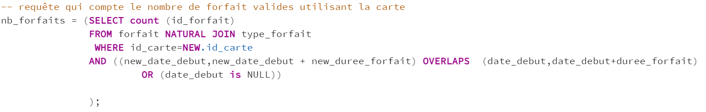
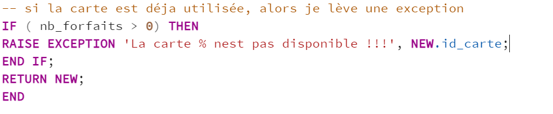
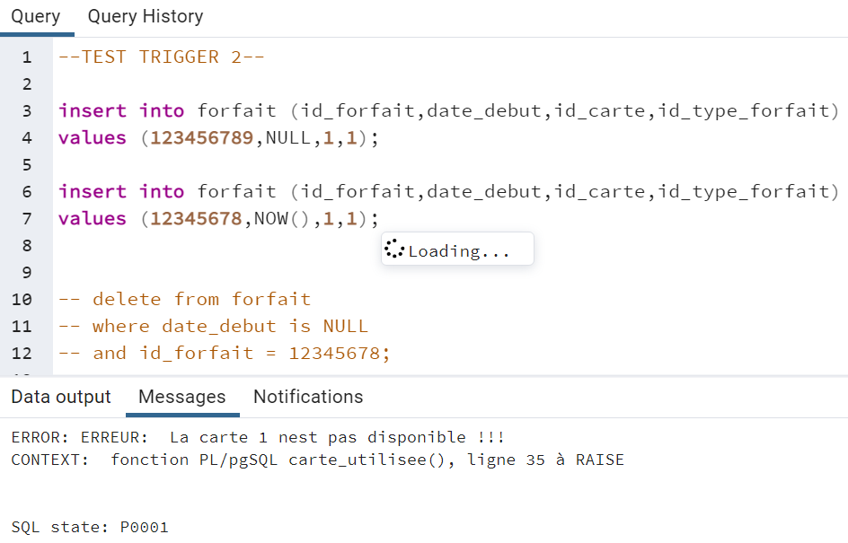
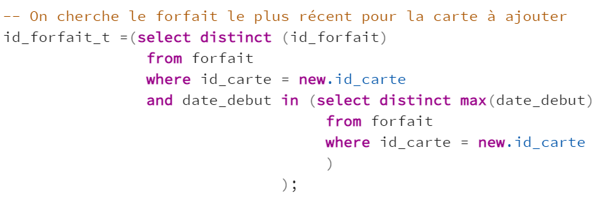
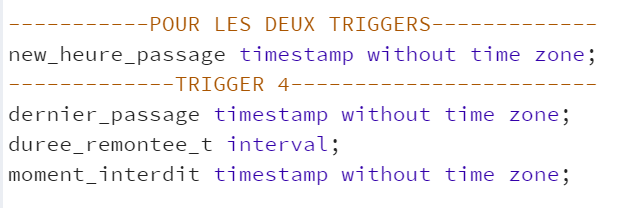
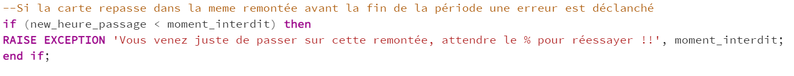
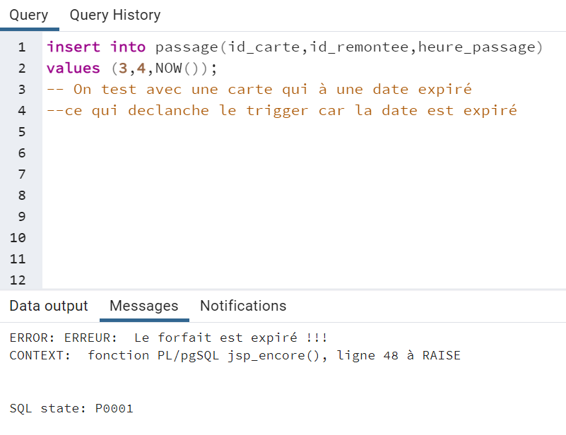
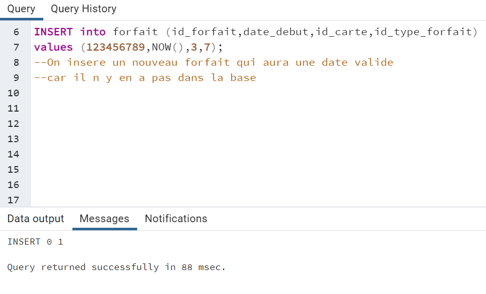
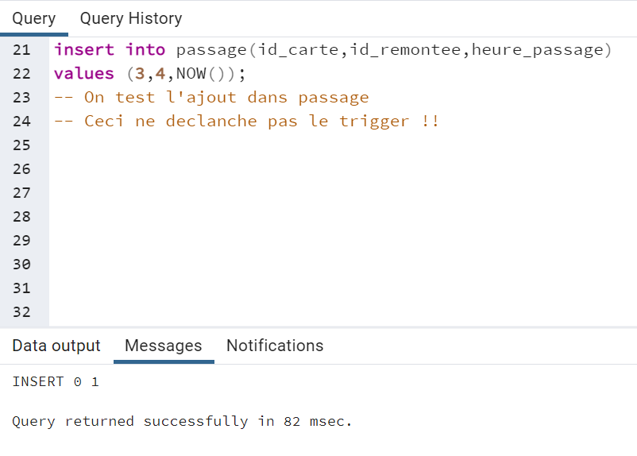

Rapport du projet
Projet de Base de Données (Master 1 SSD)
Objectifs
L’objectifs principal était de crée une base de données fonctionnelle pour des stations de ski, capable de gérer certaines contraintes imposées par le client. Pour ce faire, nous sommes partie d’une relation non normalisée, contenant un nombre important d’information sur les stations de ski. Nous avons du d’abord décomposer cette relation et normalisée nos differentes tables, afin de crée notre base. Une fois ceci réaliser, nous devions faire respecter les contraintes du clients à la base de donnée. Regardons plus en détail le travail réaliser.
Créations de la base et normalisation
Le premier objectif était de décomposer cette table en préservant les dépandance fonctionnelles et sans perte d’information. Le but étant d’obtenir plusieur tables qui respecte tous au minimum la 3ème forme normale.
Nous avons d’abord du imaginer le modèle conceptuel des données (MCD), qui vas nous permettre d’identifier les principales entités à représenter, leurs relations et leurs attributs. Nous obtenons le MCD suivant :

Une fois le MCD terminer nous avons pu facilement en tirer le modèle logique de données (MLD), afin d’avoir une representation de toute nos tables, ainsi que leurs relations et leurs attributs. Voici le MLD que nous obtenons :

Nous pouvons voir grace au MLD que chaque table respecte bien la 3ème forme normale. D’abord nous avons chacune des tables qui admet une clé primaire, et tous les attributs les attributs contiennent une seule valeur pour chaque tuple. Ensuite, nous retrouvons bien que tous nos attributs non clé ne dépendent pas d’une partie de la clé primaire. Et enfin tous nos attributs n’appartenant pas à une clé ne dépandent pas d’un attribut non clé primaire. Tous ceci nous permet de validé la 3ème forme normale. Pour aller plus loin, nous pouvons admettre que toutes nos tables repectent la forme normale de Boyce-Codd, car Tous les attributs non-clé ne sont pas source de dépendance fonctionnelle pour une partie de la clé.
La normalisation est maintenant terminer, nous connaissons les differentes tables qui composeront la base de données des stations de ski. Nous pouvons donc les crées et les allimenter grâce à la table de départ, et passer au deuxième objectif liée aux contraintes du client.
Contrainte et déclancheur (Triggers)
Dans l’état actuel notre base de données contient certaines failles, qui ne peuvent être gerer directement. Le client nous a dicté ses contraintes qui lui semble les plus importantes. C’est celle-ci que nous avons traité puis testé. Voici les contraintes imposées :
1- Une carte ne peut pas être associée à deux forfaits qui ont une période de validité commune.
2- Une carte ne peut pas être associée à un nouveau forfait si l’ancien n’est pas encore utilisé.
3- On ne peut passer à une remontée mécanique que si le forfait est valide.
4- On ne peut passer à une remontée mécanique que si le forfait n’est pas temporisé.
On peut diviser ces contraintes en deux groupes de deux. La 1 et 2 qui s’appliquerons à notre table forfait, et la 3 et 4 qui s’appliquerons à la table passage. Nous avons donc crée 2 triigers qui font appelles à des fonctions definis au préalable. C’est dans ces fonctions que l’on fait respecter les différentes contraites. Voyons plus en détails ces fonctions.
Traitement des contraintes 1 et 2
tout d’abord avec la fonction pour les deux premieres contraintes. L’objectif va être de compter le nombre de forfait qui ne respecte pas nos contraintes par rapport au forfait que nous ajoutons.

nb_forfaits : Le nombre de forfait qui ne respecte pas nos contraintes.
Nous devons ensuite attribuer des valeur à chacune de ses variables.

Pour la new_date_debut on s’assure que la valeur ne soit pas null. Si elle l’est, on lui donne comme valeur la date du jour actuel.

Pour la new_duree_forfait, on doit récuperer la valeur de celle-ci liée au type de forfait que l’ont souhaite ajouter. La requete suivante vas donc chercher cette valeur, dans notre table type_de_forfait, pour l’id_type_forfait liée au forfait que nous ajoutons.
Une fois ces deux variables initialiser nous pouvons chercher le nb_forfaits.

Pour les cartes qui correspondent à la carte liée au forfait qu’on veut ajoute, on vas d’abord chercher si la periode de notre nouveau forfait chevauche une période d’un autre forfait déja présent dans notre tables forfait. Ceci vas nous permettre de verifier la premiere contrainte.
Ensuite on cherche si la carte du nouveau forfait que l’ont ajoute, correspond à un forfait avec une carte qui n’a pas encore était utilisé. Dans nos donnée cette information est spécifié avec une date de débat à valeur null. Ici ces la contrainte deux qui vas etre pris en compte.
On compte les forfaits qui respecte ces conditions, ce qui constitue notre variable nb_forfaits.

S’il y a un forfait ou plus qui sont compter, cela signifie que nos contraintes ne sont pas respecter. Une exception sera lever et signalera que la carte n’est pas disponible, en specifiant le numéro de la carte.
La fonction maintenant terminer il faut verifier si elle fonctionne.
Test des contraintes 1 et 2
Comme dit précedement les deux premières contrainte s’applique sur la table forfait. La vérification doit se faire avant l’insertion dans cette table.

On commence par essayer la contrainte 1. Pour cela, on ajoute dans un forfait qui n’est pas présent dans nos données. Ensuite on recommence l’opération en ajoutant un forfait avec le même numéro de carte, et en prenant soit de bien avoir une période qui chauvauche le forfait précedement inserer. Ceci vas donc déclancher une exception informant que la carte n’est pas disponible. la contrainte 1 est bien respecter. Une fois cela réaliser on supprime le forfait utiliser pour le test.

Pour la contrainte 2 nous réalisons une opération assez similaire. On essaye d’ajouter deux forfaits avec le même numéro de carte, des période qui ne se chauvaiche pas, pour eviter toute confusion avec la contrainte 1, et une date nul pour le premier forfait. Le premier vas réaliser l’insertion avec succes, cepandant le deuxième forfait vas déclancher l’exception liée a la fonction. La seconde contrainte est respecter on peut maintenant supprimer le forfait test, et passer aux contraintes 3 et 4 sur la table passage.
Traitement des contraintes 3 et 4
Pour ces contraintes nous les traitons ensemble dans une même fonction, mais l’exception déclancher et les variables utilisées varie d’un trigger à un autres.

La variables new_heure_passage sera la seule utilisée pour la gestion des deux contraintes. Elle correspond à la date et l’heure de passage dans une remontée pour une carte. Si lors de l’insertion cette valeur est nul, elle prendra la date et l’heure actuelle.
Maintenant regardons plus en détail le code qui sert à faire respecter la troisième contrainte.

date_heure_fin

La variable id_forfait_t correspond a l’id_forfait du forfait le plus recent, c’est-à-dire avec la plus grande date de début dans notre table forfait, pour la cate que nous souhaitons ajouter.

On dertermine ensuite la date de fin, ainsi que l’heure de fin, pour notre id_forfait_t. On vas récuper ces valeurs dans la table type_forfait. L’heure de fin est donnée, tandis que la date de fin doit etre calculer en ajoutant la durée du fofait, à la date de début du forfait correspondant à notre id_forfait_t.
On concatene les variables date_fin et heure_fin_t pour obtenir la date_heure_fin, qui correspond à la date et l’heure d’expiration du forfait liée à la carte que nous essayons de faire passer.

Si cette date et heure d’expiration est inférieur à la date et l’heure de passage, alors on lève une exception qui spécifira que le forfait est expiré. La contrainte 3 est maintenant geré, regardons le code pour la contrainte 4.

moment_interdit

On commence par chercher, pour la carte que pour que l’ont souhaite ajouter, le dernier passage dans la remontée, que l’ont veux ajouter également. On stock le résultat dans la variable dernier_passage.
On réupere ensuite la durée de la remontée que l’on veut ajouter qui correspond à la variable duree_remontee_t.
Et on ajoute cette durée au dernier passsage pour avoir le moement ou le passage sera de nouveau autorisé.

Si l’heure de passage est inférieur à ce moment, une exection est levé signalement que le passage à cette remontée vient juste d’être effectué, précise le moment ou le passage pour de nouvent être réalisé. Ce qui fait respecter la contrainte 4. On peut maintenant testé si tout cela fonctionne correctement.
Test des contraintes 3 et 4
Nos contraintes serons traiter avant l’insertion dans la table passage.

Pour la contrainte 3 le test est très simple. Beaucoup de forfait dans notre base ont une période non valide, il suffit d’ajouter un passage pour une carte et une remontée. Ceci déclanchera l’exception, notre fonction pour le trigger 3 est fonctionnelle.

Pour la contrainte 4 nous devons procéder en plusieur étape. On vas d’abord ajouter un nouveau forfait qui aura une période valide.

On vas ensuite inserer un nouveau passage, pour la carte et une remontée de ce forfait, avec l’heure et la date du moment comme heure de passage. Ceci ne vas pas déclancher l’exception de la contrainte 4.

On essaye tout de suite après refaire la même insertion. Comme l’heure de passage aura changer ceci devrait être possible, mais la contrainte 4 n’étant pas respecter, ceci lève l’exception et indique quand le passage de cette remontée sera de nouveau possible pour cette carte. Nous avons bien réussi à gérer toutes les contraintes imposées par notre clients.
Conclusion
La base des station de ski est maintenant opérationnelle. Nous avons réussi à ciblé toutes les entiés, les attributs, et les relations, qui permettent une gestion des données simplifiées. Nous avons ensuite shématisé et crée notre base. Une fois ce travaille réalisé, nous avons fait en sorte de gérer les contraintes imposée par le client, tout en les testants au préalable. Ce projet nous à permis de mettre en oeuvre un grand nombre de nos connaissances en SQL, en passant par la création de base et la gestion des données. Nous avons tout de même fait face à des difficultées, que ce soit par l’utilisation de PgAdmin en début de projet, ou pour l’interprétation des contraintes en langage SQL. Malgrés cela, nous avons réussi à aller au bout de nos idées, et obtenons un rendu complet répondant à l’ensembles des demandes du client.